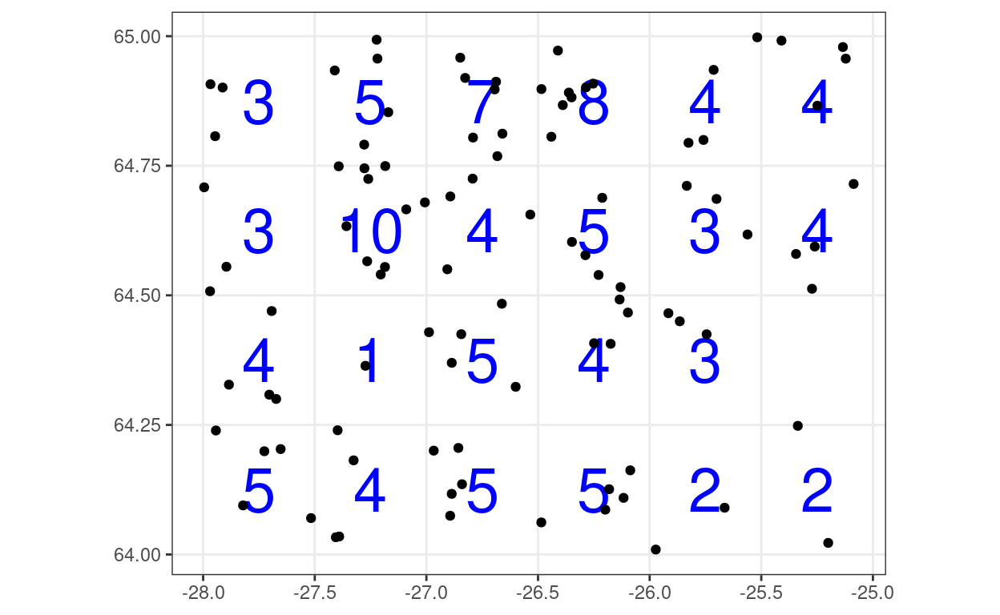
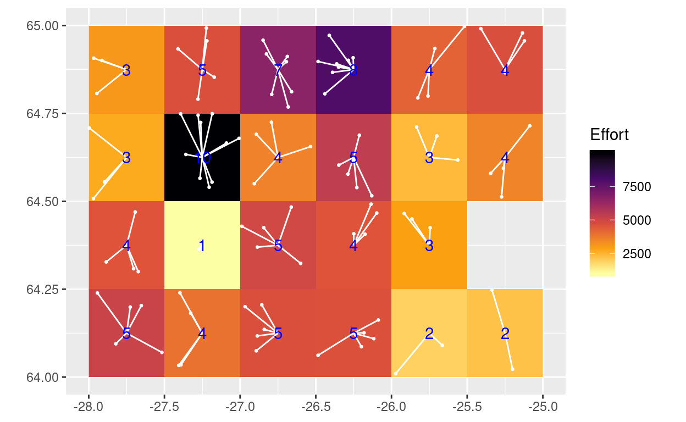
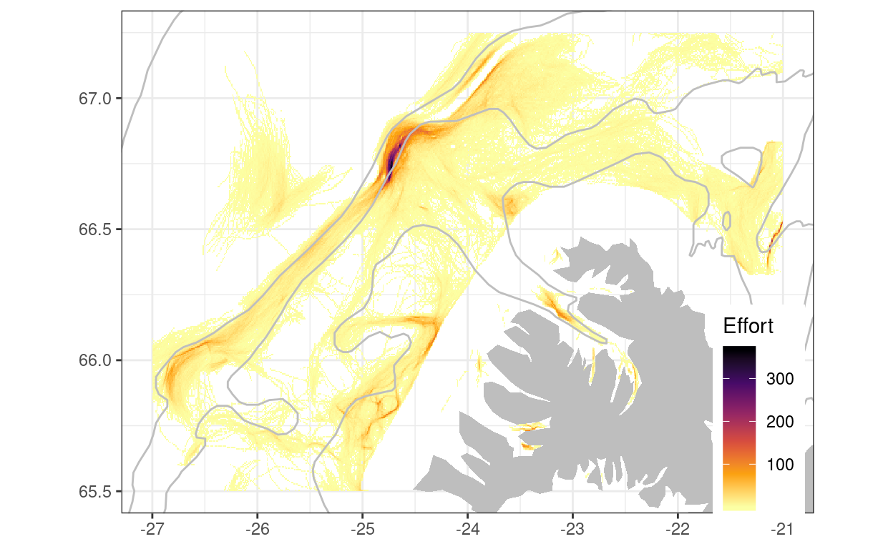

Preamble
Lets say we have some spatial observations and wanted to calculate some summary metric (count, sum, mean, variance, …) based on specified spacial gridding of the raw data. As an example, one could have 100 observations on a limited spatial scale of some 3 degrees longitude and 1 latitude and wanted to calculate the number of observations that fall within a 0.5 degree longitude and 0.25 degree latitude as depicted in the figure below (blue labels are the counts statistics of the observation within each grid):

In order to solve this problem one needs first to transform each spatial point to a central point based on user’s defined xy-resolution. I.e. we want to transform the observed spatial x and y value (the black points) to a single spatial point (the pink points) as depicted visually in this graph:

Now, solving this problem has been done myriads of times. What is documented here an example of a code flow within the tidyverse environment.
The code
The raw data above were generated as follows:
set.seed(314) # for the love of pi
d <-
tibble(lon = runif(n = 1e2, min = -28, max = -25),
lat = runif(n = 1e2, min = 64, max = 65),
effort = rnorm(n = 1e2, mean = 1000, sd = 200))Lets break the problem up by solving just one dimension (e.g. the longitude). The challenge is to assign each point to a bin and count the number of incidences that a point falls within the interval. Sort of like what happens when we generate a histogram:
d %>%
ggplot() +
geom_histogram(aes(lon), breaks = seq(-28, -25, by = 0.5),
fill = "grey", colour = "black") +
geom_jitter(aes(lon, y = 5), width = 0, height = 3, colour = "red") +
scale_x_continuous(breaks = seq(-28, -25, by = 0.5))
The steps are:
- Create some pretty breaks, given the data and the specified resolution.
- Find break interval that each data point belongs to.
- Calculate the midpoint on the interval (here the longitude) that the each data-point belongs to.
x <- d$lon
dx <- 0.5- Creating the breaks, using floor and ceiling of the minimum and maximum value in the data to ensure that one has some “pretty” intervals:
brks <- seq(floor(min(x)), ceiling(max(x)), dx)
brks
[1] -28.0 -27.5 -27.0 -26.5 -26.0 -25.5 -25.0Here we have created a vector that contains the “boundaries” of the bins we want for the horizontal data. The length of the vector is 7 but the bins (intervals) are 6.
- To find the interval position that a point belongs to we can use the
findIntervalfunction:
# https://github.com/hadley/adv-r/blob/master/extras/cpp/find-interval.cpp
# By using the argument all.inside = TRUE we assign the point to the lower break/interval position.
ints <- findInterval(x, brks, all.inside = TRUE)
ints
[1] 1 2 5 2 2 2 2 3 4 5 3 1 2 2 4 3 5 4 1 3 4 3 4 2 1 4 2 1 2 4 2 4
[33] 1 3 3 1 6 6 4 4 3 5 3 6 5 5 4 2 1 2 5 4 4 5 2 3 4 6 3 2 3 5 2 3
[65] 1 3 4 1 1 3 1 4 6 4 5 4 4 6 1 1 3 3 6 2 3 2 6 5 2 1 4 3 4 4 6 6
[97] 5 3 3 2Here we have a vector that states that the 1st observation belongs to the 1st bin, 2nd to the 2nd bin, 3rd to the 5th bin and so on. We can easily count the number of values within each bin by:
table(ints)
ints
1 2 3 4 5 6
15 20 21 22 12 10 The values are equivalent to the counts that are the values on the y-axis in the histogram above. As it stands the intervals/bins are in relative terms, i.e. they are not scaled to the original data (in this case longitude). This we solve in the third step.
- The midpoint that a data point belongs to is just the average of the lower and upper boundary of the breaks that a point belongs to:
x <- (brks[ints] + brks[ints + 1]) / 2
x
[1] -27.75 -27.25 -25.75 -27.25 -27.25 -27.25 -27.25 -26.75 -26.25
[10] -25.75 -26.75 -27.75 -27.25 -27.25 -26.25 -26.75 -25.75 -26.25
[19] -27.75 -26.75 -26.25 -26.75 -26.25 -27.25 -27.75 -26.25 -27.25
[28] -27.75 -27.25 -26.25 -27.25 -26.25 -27.75 -26.75 -26.75 -27.75
[37] -25.25 -25.25 -26.25 -26.25 -26.75 -25.75 -26.75 -25.25 -25.75
[46] -25.75 -26.25 -27.25 -27.75 -27.25 -25.75 -26.25 -26.25 -25.75
[55] -27.25 -26.75 -26.25 -25.25 -26.75 -27.25 -26.75 -25.75 -27.25
[64] -26.75 -27.75 -26.75 -26.25 -27.75 -27.75 -26.75 -27.75 -26.25
[73] -25.25 -26.25 -25.75 -26.25 -26.25 -25.25 -27.75 -27.75 -26.75
[82] -26.75 -25.25 -27.25 -26.75 -27.25 -25.25 -25.75 -27.25 -27.75
[91] -26.25 -26.75 -26.25 -26.25 -25.25 -25.25 -25.75 -26.75 -26.75
[100] -27.25Now since we are going to use this repeatedly in a workflow we may as well wrap the above three lines into a convenience function:
grade <- function(x, dx) {
brks <- seq(floor(min(x)), ceiling(max(x)),dx)
ints <- findInterval(x, brks, all.inside = TRUE)
x <- (brks[ints] + brks[ints + 1]) / 2
return(x)
}To put the function into use we simply do:
d %>%
mutate(glon = grade(lon, dx = dx)) %>%
group_by(glon) %>%
summarise(n = n()) %>%
knitr::kable()| glon | n |
|---|---|
| -27.75 | 15 |
| -27.25 | 20 |
| -26.75 | 21 |
| -26.25 | 22 |
| -25.75 | 12 |
| -25.25 | 10 |
We have the same count statistics as we got from the table call above, only now we have related the counts to a value of our data, rather than to a seqential bin-value.
We can use the grade-function to assign both the longitudinal and latitudinal observations to a specified xy-grid within in a single mutation-call:
d <-
d %>%
mutate(glon = grade(lon, dx = 0.50),
glat = grade(lat, dx = 0.25))
d %>% slice(1:10) %>% knitr::kable()| lon | lat | effort | glon | glat |
|---|---|---|---|---|
| -27.70350 | 64.30833 | 971.2615 | -27.75 | 64.375 |
| -27.18557 | 64.55467 | 1290.4014 | -27.25 | 64.625 |
| -25.70042 | 64.68599 | 860.2981 | -25.75 | 64.625 |
| -27.32607 | 64.18164 | 780.2983 | -27.25 | 64.125 |
| -27.39267 | 64.74890 | 1033.2841 | -27.25 | 64.625 |
| -27.09022 | 64.66584 | 965.6144 | -27.25 | 64.625 |
| -27.27755 | 64.74509 | 850.0575 | -27.25 | 64.625 |
| -26.88663 | 64.11706 | 576.9763 | -26.75 | 64.125 |
| -26.34812 | 64.60306 | 965.1902 | -26.25 | 64.625 |
| -25.75884 | 64.79979 | 1112.7509 | -25.75 | 64.875 |
One obtains a dataframe with the same amount of observations as the original, we have just added two more variables. One could now proceed with creating some summary statistics based on the gridded xy-values:
df <-
d %>%
group_by(glon, glat) %>%
summarise(n = n(),
m = mean(effort),
s = sum(effort),
sd = sd(effort))
# etc.
df %>% ungroup() %>% slice(1:10) %>% knitr::kable()| glon | glat | n | m | s | sd |
|---|---|---|---|---|---|
| -27.75 | 64.125 | 5 | 1022.5096 | 5112.5478 | 229.6725 |
| -27.75 | 64.375 | 4 | 1137.8015 | 4551.2061 | 114.0223 |
| -27.75 | 64.625 | 3 | 891.8389 | 2675.5167 | 224.4080 |
| -27.75 | 64.875 | 3 | 1027.4963 | 3082.4889 | 116.3074 |
| -27.25 | 64.125 | 4 | 984.9683 | 3939.8731 | 136.6450 |
| -27.25 | 64.375 | 1 | 999.6678 | 999.6678 | NA |
| -27.25 | 64.625 | 10 | 998.4746 | 9984.7459 | 170.6212 |
| -27.25 | 64.875 | 5 | 932.1593 | 4660.7964 | 207.5640 |
| -26.75 | 64.125 | 5 | 934.0566 | 4670.2830 | 203.0497 |
| -26.75 | 64.375 | 5 | 984.8071 | 4924.0354 | 115.7967 |
So we have condensed the original 100 observations to a dataset that contains 23 observations (6 bins in the x-dimension times 4 in the y-dimension, minus one “missing” grid dimension). And now one is ready to plot any statistics of interest, here we just choose to display the counts by colour codes using the ggplot raster function adding the original data as well:
df %>%
ungroup() %>%
ggplot(aes(glon, glat)) +
geom_raster(aes(fill = s)) +
geom_point(data = d, aes(lon, lat), colour = "white", size = 0.5) +
geom_segment(data = d, aes(xend = lon, yend = lat), colour = "white") +
geom_text(aes(label = n), colour = "blue") +
scale_fill_viridis_c(option = "B", direction = -1) +
scale_x_continuous(breaks = seq(-28, -25, by = 0.5)) +
coord_quickmap() +
labs(x = NULL, y = NULL, fill = "Effort")
If one is interested in displaying other type of statistics, one could replace the variable name in the fill-argument in the geom_raster call above.
A case examples
Here we take an example of 618454 records of geoposition from activities of bottom trawlers operating in waters northwest of Iceland. The position is automatically recorded every 5 minutes or so and the raw data look something like this:
vms %>% slice(1:10) %>% knitr::kable()| id | date | lon | lat |
|---|---|---|---|
| -834837 | 2016-12-13 03:51:45 | -24.56281 | 66.87381 |
| -834837 | 2016-12-13 03:56:04 | -24.55106 | 66.87589 |
| -834837 | 2016-12-13 04:02:04 | -24.53802 | 66.87763 |
| -834837 | 2016-12-13 04:06:14 | -24.52499 | 66.87937 |
| -834837 | 2016-12-13 04:12:14 | -24.51141 | 66.88040 |
| -834837 | 2016-12-13 04:16:24 | -24.49784 | 66.88143 |
| -834837 | 2016-12-13 04:22:24 | -24.48393 | 66.88092 |
| -834837 | 2016-12-13 04:26:54 | -24.47002 | 66.88041 |
| -834837 | 2016-12-13 04:32:54 | -24.46468 | 66.88093 |
| -834837 | 2016-12-13 04:37:04 | -24.45934 | 66.88145 |
The id is a reference to individual tows (there are 16580 tows in the database).
Now lets use the grade convenience function above and calculate the number of observations (here effort) at a xy-resolution of 0.01 x 0.005 degrees:
dx <- 0.01
vms <-
vms %>%
mutate(lon = grade(lon, dx),
lat = grade(lat, dx/2)) %>%
group_by(lon, lat) %>%
summarise(n = n())We now have created a summary statistic containing 66303 records that looks something like this:
# code just to display first 10 records:
vms %>% ungroup() %>% slice(1:10) %>% knitr::kable()| lon | lat | n |
|---|---|---|
| -26.995 | 65.8375 | 1 |
| -26.995 | 65.8475 | 2 |
| -26.995 | 65.8525 | 2 |
| -26.995 | 65.8575 | 2 |
| -26.995 | 65.8625 | 2 |
| -26.995 | 65.8725 | 2 |
| -26.995 | 65.8875 | 2 |
| -26.995 | 65.8925 | 4 |
| -26.995 | 65.9025 | 2 |
| -26.995 | 65.9075 | 6 |
Here the lon and the lat refer to the center positioning within the specified xy-grid and n refers to the sum of the numbers of trawling operation recorded within that grid (effort).
Now we let ggplot2 do the rest, just adding an anonymous “island” and 100, 200 and 400 meter depth contour as a reference:
vms %>%
ggplot() +
theme_bw() +
geom_raster(aes(lon, lat, fill = n)) +
geom_polygon(data = geo::island,
aes(lon, lat, group = NULL), fill = "grey") +
geom_path(data = geo::gbdypi.400,
aes(lon, lat, group = NULL), colour = "grey") +
geom_path(data = geo::gbdypi.200,
aes(lon, lat, group = NULL), colour = "grey") +
geom_path(data = geo::gbdypi.100,
aes(lon, lat, group = NULL), colour = "grey") +
scale_fill_viridis_c(option = "B", direction = -1) +
scale_x_continuous(breaks = seq(-27, -21, by = 1)) +
scale_y_continuous(breaks = seq(65.5, 67.5, by = 0.5)) +
coord_quickmap(xlim = range(vms$lon), ylim = range(vms$lat)) +
labs(x = NULL, y = NULL, fill = "Effort") +
theme(legend.position = c(0.92, 0.2))